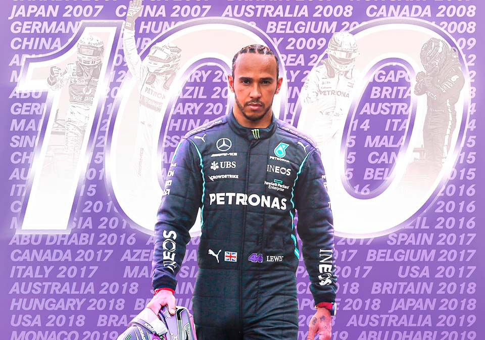
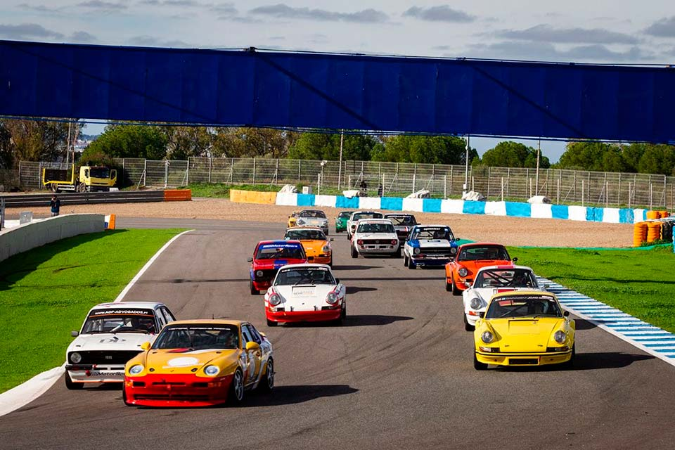

Notícias mais relevantes:
Lewis Hamilton bate recorde mundial ao chegar à sua 100º ´pole position´ na sua carreira.
Piloto com origens britânicas é o primeiro piloto de F1 a bater 100 ´pole position´ no mundo da Fórmula 1 a pilotar pela mercedes petronas f1 team, sendo o mais rápido na qualificação para a corrida de domingo, em Espanha.
O piloto britânico conquistou a sua 1º ´pole' no Grande Prémio do Canadá, em 2007, pela equipa da Mclaren, onde se estreou na F1.
Ao longo de 14 anos, Lewis Hamilton é campeão mundial de F1 sete vezes sendo, assim, um dos maiores pilotos de todos os tempos no mundo automobilistico de Fórmula 1 e um dos desportistas mais bem sucedidos do mundo.
Carrera Los 80 têm estreia promissora no Circuito de Portimão, em Portugal.
O Circuito Automobilistico de Portimão foi palco de uma corrida de carros dos anos 80 e 90 no última sexta feira.
Contando com várias categorias de automóveis, esta competição trouxe até Portugal maravilhas para os aficionados pelos automóveis dos anos 80 e 90 contando 22 pilotos e uma corrida de 40 minutos de duração.
A época dos anos 80 foi a época de Ouro dos carros de Turismo, oferecendo Campeonato Europeu de Turismo fantásticas provas, assim como excitantes provas os variados campeonatos nacionais com a regulamentação de Group 2 e Group A. Foi também nesta década que surgiram com força os troféus monomarca que atraíram muita simpatia, quer dos pilotos, quer do publico.